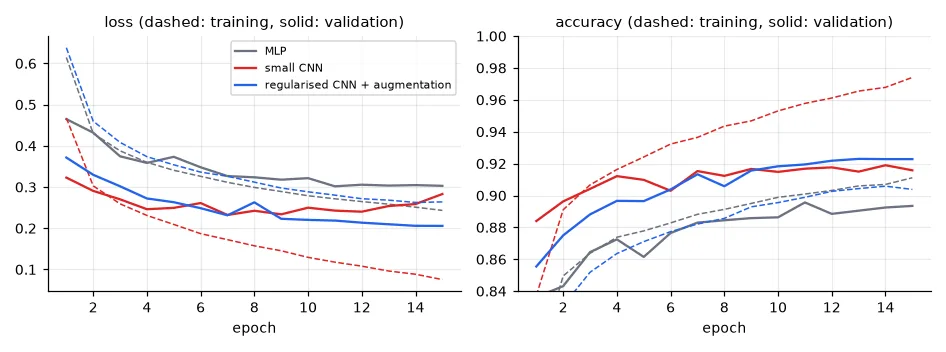
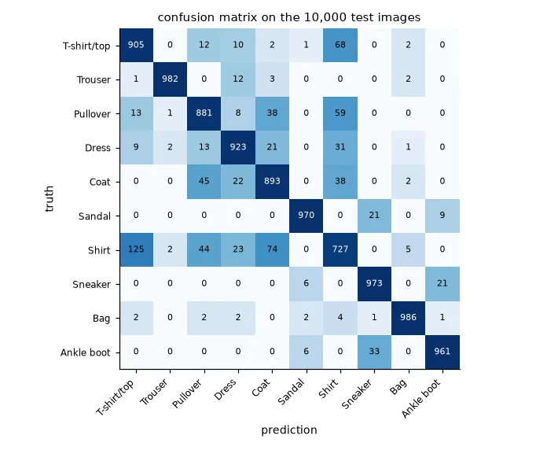
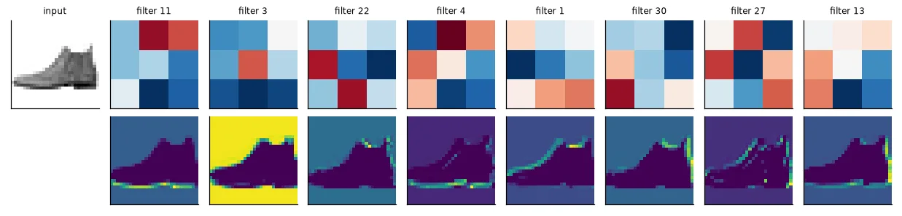

Images are not just long vectors#
The MLP of lesson 12 started with Flatten: the 28×28 image became 784 unrelated numbers. Shuffle the pixels the same way in every image and the MLP learns exactly as well — it has no idea that pixel (10, 10) is next to pixel (10, 11). Two facts about images are thrown away:
- Locality: what matters are local patterns — an edge, a corner, a texture — made of neighbouring pixels.
- Translation equivariance: an edge is an edge wherever it is. A detector learnt in the top-left corner should work in the bottom-right.
A convolution layer builds both in. It slides a small kernel (3×3 here) over the image and computes the same weighted sum at every position — exactly the filtering of the Computer Vision course, except that the kernel weights are learnt. A layer has many kernels (channels), each producing a feature map.
The data#
Fashion-MNIST (Zalando): 70,000 grey 28×28 images of 10 kinds of clothing, a harder drop-in replacement for MNIST — digits are too easy to tell methods apart.
x_train, y_train, x_test, y_test = U.load_mnist(fashion=True)
X = torch.from_numpy(x_train).float().unsqueeze(1) / 255.0 # (60000, 1, 28, 28) float32 in [0, 1]
Y = torch.from_numpy(y_train) # (60000,) int64
X_test = torch.from_numpy(x_test).float().unsqueeze(1) / 255.0
Y_test = torch.from_numpy(y_test)
perm = torch.randperm(len(X))
tr, va = perm[:54000], perm[54000:] # 10% validation, like validation_split=0.1
print("train", tuple(X[tr].shape), "val", tuple(X[va].shape), "test", tuple(X_test.shape))
train (54000, 1, 28, 28) val (6000, 1, 28, 28) test (10000, 1, 28, 28)
PyTorch images are (batch, channels, height, width) — channels first, unlike NumPy/OpenCV images (H, W, C) and Keras (N, H, W, C). Forgetting the unsqueeze(1) (the channel axis) is the first CNN bug everyone makes.
What a convolution layer costs#
conv = nn.Conv2d(in_channels=1, out_channels=32, kernel_size=3, padding=1)
print("conv weight", tuple(conv.weight.shape), "-> parameters:", sum(p.numel() for p in conv.parameters()))
x = X[:8] # (8, 1, 28, 28) a batch of 8 images
print("input", tuple(x.shape), "-> conv", tuple(conv(x).shape), "-> max-pool",
tuple(nn.MaxPool2d(2)(conv(x)).shape))
dense = nn.Linear(28 * 28, 28 * 28 * 32)
print("a dense layer with the same output size would need %.1f M parameters"
% (sum(p.numel() for p in dense.parameters()) / 1e6))
conv weight (32, 1, 3, 3) -> parameters: 320
input (8, 1, 28, 28) -> conv (8, 32, 28, 28) -> max-pool (8, 32, 14, 14)
a dense layer with the same output size would need 19.7 M parameters
32 kernels of 3×3, plus 32 biases: 320 parameters to produce 25,088 outputs. A dense layer with the same output would need 19.7 million. That is weight sharing: the same 9 weights are reused at all 784 positions. With padding=1 the output keeps the input size (in general, \(\text{out} = (\text{in} + 2p - k)/s + 1\) for kernel \(k\), padding \(p\), stride \(s\)).
Max-pooling keeps the largest value of each 2×2 block: it halves the resolution, makes the representation tolerant to small shifts, and lets the next layer's 3×3 kernels see a 2× larger region of the original image. Stacking conv + pool layers grows the receptive field: early layers see edges, later layers see parts made of edges.
Three models#
def mlp():
"""The tutorial's first model: flatten the image, one hidden layer."""
return nn.Sequential(nn.Flatten(), nn.Linear(784, 128), nn.ReLU(), nn.Linear(128, 10))
def small_cnn():
"""The class's 'version 2': one convolution + pooling in front of the same classifier."""
return nn.Sequential(nn.Conv2d(1, 32, 3, padding=1), nn.ReLU(), nn.MaxPool2d(2), # (32, 14, 14)
nn.Flatten(), nn.Linear(32 * 14 * 14, 128), nn.ReLU(), nn.Linear(128, 10))
def regularised_cnn():
"""Two conv stages with batch norm, dropout before the classifier."""
def block(cin, cout):
return [nn.Conv2d(cin, cout, 3, padding=1, bias=False), nn.BatchNorm2d(cout), nn.ReLU()]
return nn.Sequential(*block(1, 32), *block(32, 32), nn.MaxPool2d(2), # (32, 14, 14)
*block(32, 64), nn.MaxPool2d(2), # (64, 7, 7)
nn.Flatten(), nn.Dropout(0.4), nn.Linear(64 * 7 * 7, 128), nn.ReLU(),
nn.Dropout(0.4), nn.Linear(128, 10))
for name, f in [("MLP", mlp), ("small CNN", small_cnn), ("regularised CNN", regularised_cnn)]:
print(f"{name:16s} {sum(p.numel() for p in f().parameters()):9,d} parameters")
MLP 101,770 parameters
small CNN 804,554 parameters
regularised CNN 431,018 parameters
The first two are the models of the UFRN class (Keras model1 and model2). The small CNN has 8× more parameters than the MLP — but 99.9% of them are in the dense layer after Flatten (32 × 14 × 14 × 128), not in the convolution. The regularised CNN has more convolutions and fewer parameters, because it pools twice before the dense layer.
The third model adds three regularisers:
- Batch normalisation normalises each channel over the mini-batch (zero mean, unit variance, then a learnt scale and shift) — lesson 02's "normalise the inputs", applied inside the network at every layer. It makes training much less sensitive to the learning rate and initialisation.
- Dropout sets a random 40% of the activations to zero at each training step, so no unit can rely on a specific other unit; at test time all units are used (PyTorch rescales automatically — one reason
model.eval()matters). - Data augmentation shows a slightly different version of each image at every epoch:
class Augmented(torch.utils.data.Dataset):
"""Random horizontal flip and a random shift of up to 2 pixels, drawn anew every epoch."""
def __init__(self, X, Y):
self.X, self.Y = X, Y
def __len__(self):
return len(self.X)
def __getitem__(self, i):
x = self.X[i] # (1, 28, 28)
if torch.rand(1) < 0.5:
x = x.flip(-1)
dx, dy = torch.randint(-2, 3, (2,)).tolist()
x = torch.roll(nn.functional.pad(x, (2, 2, 2, 2)), shifts=(dy, dx), dims=(1, 2))[:, 2:30, 2:30]
return x, self.Y[i]
Augmentations must preserve the label: a mirrored shoe is still a shoe, but a mirrored "6" in MNIST is not a "6" any more, and upside-down clothes would not appear in the test set. Finally, weight decay and a cosine learning-rate schedule (large steps first, small at the end) — the training helper is lesson 12's loop moved to mlutils.py:
def train_classifier(model, train_loader, X_val, y_val, epochs, lr=1e-3, weight_decay=0.0, device="cpu",
cosine=True, verbose=True):
"""Lesson 12's training loop for a multi-class classifier, with AdamW and (optionally) a cosine
learning-rate schedule. Returns per-epoch (train loss, train acc, val loss, val acc)."""
import torch
from torch import nn
model.to(device)
opt = torch.optim.AdamW(model.parameters(), lr=lr, weight_decay=weight_decay)
steps = epochs * len(train_loader)
sched = torch.optim.lr_scheduler.LambdaLR(
opt, (lambda t: 0.5 * (1 + np.cos(np.pi * t / steps))) if cosine else (lambda t: 1.0))
loss_fn = nn.CrossEntropyLoss()
history = []
for epoch in range(epochs):
model.train()
tot_loss, tot_ok, n = 0.0, 0, 0
for xb, yb in train_loader:
xb, yb = xb.to(device), yb.to(device)
out = model(xb) # (B, n_classes) logits
loss = loss_fn(out, yb)
opt.zero_grad()
loss.backward()
opt.step()
sched.step()
tot_loss += loss.item() * len(xb)
tot_ok += (out.argmax(1) == yb).sum().item()
n += len(xb)
vl, va = evaluate(model, X_val, y_val, device)
history.append((tot_loss / n, tot_ok / n, vl, va))
if verbose:
print(f" epoch {epoch + 1:2d}: train loss {tot_loss / n:.4f} acc {tot_ok / n:.4f} | "
f"val loss {vl:.4f} acc {va:.4f}")
return np.array(history)
def evaluate(model, X, y, device="cpu", batch=1000):
"""Mean cross-entropy and accuracy of a classifier on tensors X (N, ...) and y (N,)."""
import torch
from torch import nn
model.eval()
loss, ok = 0.0, 0
with torch.no_grad():
for i in range(0, len(X), batch):
out = model(X[i:i + batch].to(device))
loss += nn.functional.cross_entropy(out, y[i:i + batch].to(device), reduction="sum").item()
ok += (out.argmax(1).cpu() == y[i:i + batch]).sum().item()
return loss / len(X), ok / len(X)
Training#
EPOCHS = 15
plain = DataLoader(TensorDataset(X[tr], Y[tr]), batch_size=128, shuffle=True)
augmented = DataLoader(Augmented(X[tr], Y[tr]), batch_size=128, shuffle=True)
results, models = {}, {}
for name, make, loader, reg in [("MLP", mlp, plain, False), ("small CNN", small_cnn, plain, False),
("regularised CNN + augmentation", regularised_cnn, augmented, True)]:
torch.manual_seed(0)
models[name] = make()
print(name)
# the first two as in class (Adam, constant lr 1e-3); the third adds weight decay and a cosine schedule
results[name] = U.train_classifier(models[name], loader, X[va], Y[va], EPOCHS, lr=1e-3,
weight_decay=1e-4 if reg else 0.0, cosine=reg, device=device,
verbose=False)
h = results[name]
best = int(h[:, 2].argmin())
_, test_acc = U.evaluate(models[name], X_test, Y_test, device)
print(f" final: train acc {h[-1, 1]:.4f}, val acc {h[-1, 3]:.4f}, test acc {test_acc:.4f} | "
f"lowest val loss {h[best, 2]:.4f} at epoch {best + 1}, final val loss {h[-1, 2]:.4f}")
MLP
final: train acc 0.9111, val acc 0.8935, test acc 0.8845 | lowest val loss 0.3018 at epoch 11, final val loss 0.3030
small CNN
final: train acc 0.9741, val acc 0.9158, test acc 0.9140 | lowest val loss 0.2323 at epoch 7, final val loss 0.2832
regularised CNN + augmentation
final: train acc 0.9039, val acc 0.9228, test acc 0.9201 | lowest val loss 0.2058 at epoch 15, final val loss 0.2058

Three things to read in this figure:
- The convolution helps: +3 points over the MLP with the same classifier on top.
- The small CNN overfits, as it did in my Colab run (Keras, 20 epochs: validation loss 0.257 at epoch 3, then up to 0.537 at epoch 20 while training accuracy kept climbing): training accuracy 97%, validation 92%, and the validation loss rising while the accuracy stays flat — the model becomes over-confident on the images it gets wrong. Early stopping (lesson 12) would have kept the epoch-7 weights.
- Regularisation removes the overfitting. The regularised model's training accuracy is lower than its validation accuracy — normal, since it is measured with dropout on and on augmented images — and it is still improving after 15 epochs. The test gain is small here (92.0% vs 91.4%) because 15 epochs is short; regularised models need longer training, and they are the ones that keep improving.
What it gets wrong#
model = models["regularised CNN + augmentation"].eval()
with torch.no_grad():
pred = torch.cat([model(X_test[i:i + 1000].to(device)).argmax(1).cpu() for i in range(0, 10000, 1000)])
cm = confusion_matrix(Y_test, pred)
per_class = cm.diagonal() / cm.sum(1)
for k in np.argsort(per_class)[:3]:
other = np.argsort(cm[k])[-2]
print(f"{U.FASHION_CLASSES[k]:12s} accuracy {per_class[k]:.3f}, most often mistaken for {U.FASHION_CLASSES[other]}"
f" ({cm[k, other]} times)")
Shirt accuracy 0.727, most often mistaken for T-shirt/top (125 times)
Pullover accuracy 0.881, most often mistaken for Shirt (59 times)
Coat accuracy 0.893, most often mistaken for Pullover (45 times)

Trousers, bags, sandals and boots are near-perfect; shirt, T-shirt, pullover and coat are confused with each other. At 28×28 in greyscale, a shirt and a T-shirt can be literally the same blob of pixels — some of these errors are label noise and some are the limit of the resolution. A confusion matrix tells you where more data, more resolution or a better model would pay off.
What the filters learn#
first = model[0].weight.detach().cpu() # (32, 1, 3, 3) learnt 3x3 filters
img = X_test[0:1].to(device) # (1, 1, 28, 28) an ankle boot
with torch.no_grad():
maps = model[:3](img)[0].cpu() # (32, 28, 28) after conv + BN + ReLU
active = maps.flatten(1).mean(1).argsort(descending=True)[:8]
print("first-layer filters", tuple(first.shape), "| feature maps", tuple(maps.shape))
first-layer filters (32, 1, 3, 3) | feature maps (32, 28, 28)

Nobody told the network to detect edges. Gradient descent found that horizontal, vertical and diagonal derivative filters are the most useful first step to classify clothes — the same conclusion image processing reached by hand decades ago. Deeper layers combine these maps into textures, parts and shapes.
Put a model behind an interface
The UFRN exercise wrapped an MNIST CNN in a Gradio app with a sketchpad: draw a digit, get the prediction. The lesson I took from it: the model reached 98.7% on the test set but failed on many uploaded photos of digits — they were dark-on-white, off-centre and not 28×28, unlike MNIST's white-on-black centred digits. A test set only measures performance on data like the training data; preprocessing new inputs the same way (invert, crop, centre, resize) matters as much as the network.
Exercises#
- Train the small CNN with early stopping (
patience=3) using lesson 12'sfit. Which epoch is kept, and what is its test accuracy? - Remove one ingredient at a time from the regularised model (batch norm, dropout, augmentation, cosine schedule) and train for 15 epochs. Which one matters most here?
- Replace max-pooling by convolutions with
stride=2. Compare parameters, time per epoch and accuracy.